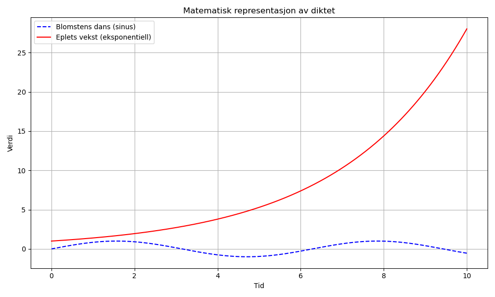

Dagens dikt
Under et tre, så høyt og blått,
Falt et eple, og så den lått.
En blomst spratt opp av ingenting,
Og danset i takt med vårens ring.
Men eplet var sulten, det ville mer,
Så den vokste med hver vårens klær.
I matematiske toner sang det høyt,
Et eple i vekst, med kurver så bøyd.
La oss gjøre dette til matematikk:
La blomsten være en sinuskurve, som representerer dansen.
Eplet representeres som eksponentiell vekst, som viser hvordan den utvikler seg over tid.
Vi plottet begge for å se diktets essens i matematisk form.

Kode
import numpy as np
import matplotlib.pyplot as plt
# Tiden
t = np.linspace(0, 10, 500)
# Blomstens dans - sinuskurve
blomst_dans = np.sin(t)
# Eplets vekst - eksponentiell vekst
eple_vekst = np.exp(t / 3)
# Plotting
plt.figure(figsize=(10, 6))
# Plotte blomstens dans
plt.plot(t, blomst_dans, label="Blomstens dans (sinus)", color='blue', linestyle='--')
# Plotte eplets vekst
plt.plot(t, eple_vekst, label="Eplets vekst (eksponentiell)", color='red')
# Legg til detaljer i grafen
plt.title("Matematisk representasjon av diktet")
plt.xlabel("Tid")
plt.ylabel("Verdi")
plt.legend(loc="upper left")
plt.grid(True)
# Vis grafen
plt.tight_layout()
plt.savefig('2025-03-20-20-01-41.png')